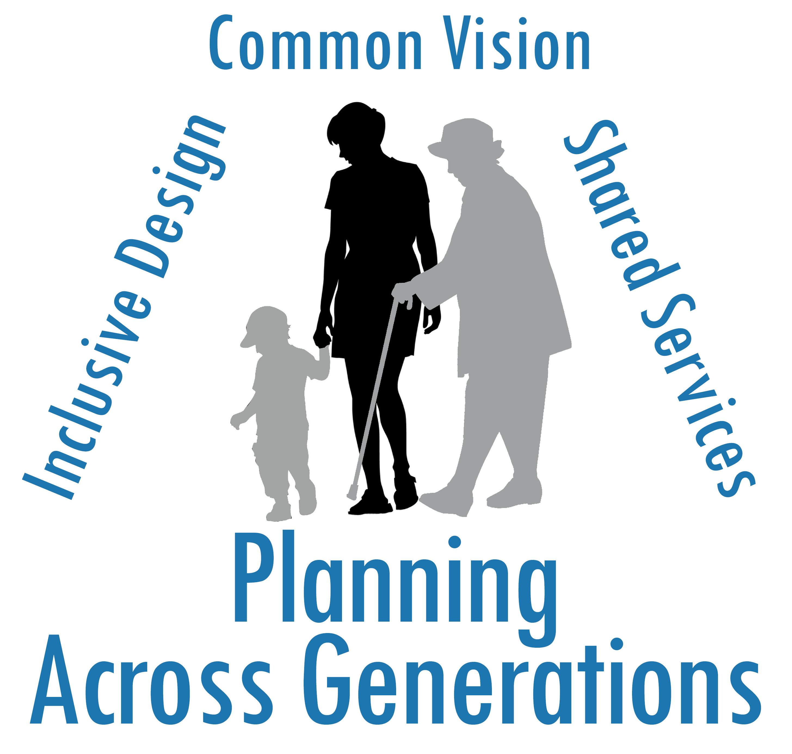

Planning Across Generations
Overview: The needs of families with young children and seniors wanting to age in place are not adequately addressed in many communities. Children and seniors have unique requirements relating to housing and neighborhood design, parks and recreation, and transportation. Communities that address these needs benefit both socially and economically. This section gives practicing planners the background and tools they need to implement family-friendly initiatives. Multi-generational planning is based on inclusive design, shared services, and a common vision to meet the needs of all residents.
Professor Warner wins Margarita McCoy Award for Advancement of Women in Planning, Nov. 2020. Profile
Click here to view the most recent Warner team publications on this subject.
- Tompkins County Age-Friendly Center for Excellence. 2021 Reports: Age-Friendly Planning in Tompkins County: Bridging the Rural-Urban Divide, / Multiagency Response to Food Insecurity during the COVID-19 Pandemic, / Tompkins County Age-Friendly Survey Summary
- Age-Friendly Cities - Do Female Managers Matter (Warner and Zhang 2020).
- Multigenerational Planning: Theory and Practice (Warner 2017); Urbanistica Tre, Planning for All Generations: Per una pianificazione multigenerazionale (Full Special Issue)
- Lessons from Rome Neighborhood Workshop - for US communities.
- Rome Workshop Issue Briefs, June 2017: Walkability: It’s Not all About Design,/ Hearing the Voices of Children and Elders, / Living Next to a Transit Corridor – A Livability Audit for Children and Elders, / Local Institutions Matter: Building a Neighborhood for All Generations
- Rome Workshop Reports, June 2017: Pineta Sacchetti, Tufello, San Giovanni, Piazza Alessandria
- Rural Sullivan County, NY Case Studies - Full Report, Issue Brief of Survey Results
- Collaboration: The key to building communities for all generations (Choi & Warner 2015). Provides analysis of results of the national Planning Across Generations survey of U.S. counties conducted with ICMA in 2013.
-
Not Your Mother's Suburb: Remaking Communities for a More Diverse Population (Micklow and Warner 2014) Population profiled on OZY. Click here to read.
-
Issue Briefs on Multigenerational Planning American Planning Association Conference 2013:
Overview / Reconnecting Planning to Health / Funding / Multigenerational Schoolyards / Neighborhood Schools / The Planning Gender Gap / Demographics Matter / Informal Networks / Communication / Bibliography - Using Smart Growth and Universal Design to Link the Needs of Children and the Aging Population (2011)
Prepared by the American Planning Association, as part of a collaborative project with Cornell University Linking Economic Development and Child Care Project, with funding from the W.K. Kellogg Foundation and the Peppercorn Foundation.
This briefing paper explores four key points for planners to consider when addressing the needs of multiple generations in the planning for healthy, sustainable communities. It explains how multigenerational planning creates new coalition-building opportunities; why civic participation and engagement is essential for all age groups; and why an understanding of the needs of multiple generations is essential to smart growth and sustainable design and development.
-
Joint Use: School Community Collaboration.
Lydia Morken and Rebecca Baran-Rees. 2012. Issue Brief. Department of City and Regional Planning, Cornell University.
Joint use agreements allow cities and school districts to find practical and programmatic synergies by maximizing use of school buildings, athletic fields, parks, libraries, and other often under-utilized community assets. Facility and program sharing enhance service effectiveness in meeting the needs of children and the broader community.
-
Multigenerational Planning: Linking the Needs of Children and Elders
Esther Greenhouse, George Homsy, and Mildred E. Warner. Planning for Family Friendly Communities Briefing Paper. Cornell University, April 2010.
The new pressures of an aging society require that we recognize the shared economic and community issues faced by different generations and across different ethnicities. This brief discusses ways that such a mindset has started to germinate. Planners must be at the forefront of building new conversations, new coalitions and new shared strategies that link the generations and build more sustainable communities.
-
The Center for Michigan explores the challenges rural communities face when addressing the needs of both elder and young populations. Click here to read the article, Down and Out in Lake County.
Child and Family Friendly Planning
Click here for information related to the particular needs of children and young families.
Planning for the Aging Population
Click here for specific information related to elders.
Webinars and Presentations
Information and materials related to webinars and presentations on Planning Across Generations is available here.
Data
ICMA/Cornell Planning for all Ages Survey 2019
This survey updates the 2013 survey. It is a joint project of Cornell University and ICMA with funding frm the USDA. The survey summary is here.
ICMA/Cornell Planning across Generations Survey 2013
The “Planning Across Generations” Survey was a joint project of USDA, Cornell University, and ICMA. It was conducted in the fall of 2013 and closed in May 2014. Surveys were mailed to 7,948 city-type and county governments. An online option was also available. The survey response rate is 19%, with 1,478 local governments responding. The survey explores how city leaders consider the needs of both families with young children and elders. The survey has excellent coverage of urban, suburban and rural communities.
In 2008 Cornell University collaborated with the American Planning Association (APA) to conduct a survey of planners’ roles in creating family friendly communities.The survey was developed in focus groups of practicing planners with support from several APA regional and subject area divisions (e.g. housing and community development, planning and women). It explored three general sets of questions: planners’ attitudes about the importance of families to communities, actions planners can take to support families, and barriers to the creation of family friendly communities.
The results also are discussed in the following APA Planning Advisory Service (PAS) memo:
Planning for Family Friendly Communities, by Evelyn Israel and Mildred Warner (November/December 2008).